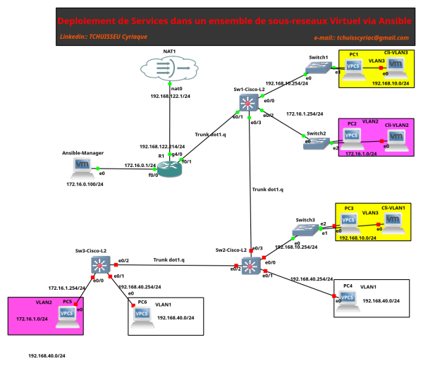
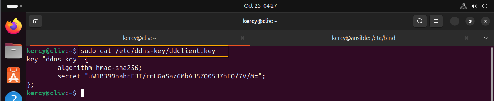

Configuration du DDNS sur Bind9
Definition des termes et Roles de composants
fait 2025/10/25 - 02:24
C'est quoi un serveur DNS(Domain Name System) est un composant essentiel d'internet qui agit comme un annuaire ou un repertoire telephonique pour les noms de domaine.
Exemple : www.google.com -→ 142.250.192.4
C'est quoi un DDNS (Dynamic Domain Name System) est une extension du systeme DNS classique ,concue pour gerer les addresses IP Dynamiques.
C'est quoi TSIG il s'agit d'un mecanisme de securite base sur des cles partagees(HMAC) pour authentifier les mises a jour DNS.
C'est quoi nsupdate il s'agit d'un outil en ligne de commande pour envoyer des requetes de mise a jour DNS Dynamiques.
C'est quoi ddclient (ou equivalent) : il s'agit d'un client leger qui detecte les changements d'adresse IP et envoie automatiquement des mises a jour DNS.
C'est quoi named.conf : il s'agit de fichier principal de configuration.
C'est quoi named.conf.local ou named.conf.options : il s'agit de fichiers permettant de definir les zones et les ACLs.
Vue conceptuelle par contraste au DNS classique
Le DNS associe un nom de domaine(comme google.com) a une adresse IP fixe.
Le DDNS,lui,permet d'associer un nom de domaine a une adresse IP qui change regulierement ,comme celles attribuees par les FAI aux connexions domestiques ou mobiles.Ideal pour les environnements en DHCP.
Liste d'outils pour notre configuration en Local
Outils et composants pour configurer un DDNS avec BIND9
- BIND9(Berkeley Internet Name Domain) ◇Serveur DNS open-source utilise pour heberger les zones DNS.
- Permet la configuration des zones dynamiques avec mises a jour securisees via TSIG.
- TSIG(Transaction SIGnature)
- Mecanisme de securite base sur des cles partagees(HMAC) pour authentifier les mises a jour DNS.
- Utilise pour securiser les mises a jour dynamiques envoyees au serveur BIND.
- nsupdate
- Mecanisme generalement cote client pour effectuer les mises a jour dans enregistrement dans les zones DNS.
- Utilise les cles TSIG pour authentifier les requetes.
- Ideal pour les tests manuels ou les script automatises.
- ddclient(ou equivalent)
- Client DDNS leger qui detecte les changements d'adresse IP et envoie automatiquement des mises a jour DNS.
- Peut etre configure pour utiliser nsupdate avec TISG ou interagir avec des APIs de fournisseurs DDNS.
- rndc(Remote Name Daemon Control) : est l'outil de gestion a distance de BIND9.Il permet d'interagir avec le serveur DNS en cours d'execution sans redemarrer le service.
- A quoi sert rndc ?
- Controle du serveur BIND: redemarrage ,rechargement des zones ,vidage du cache,verification de la configuration,etc.
- Gestion des zones dynamiques: permet de geler/degeler une zone pour modifier son fichier manuellement.
- Securite : utilise une cle partagee (rndc.key) pour authentifier les commandes.
Commandes Utiles
| Commande | Description |
|---|
| rndc reload | recharge la configuration et les fichiers de zone. |
| rndc reconfig | recharge uniquement la configuration(named0conf) |
| rndc flush | Vide le DNS |
| rndc freeze zone.local | gele une zone dynamique pour les modification manuelle. |
| rndc thaw zone.local | Degele la zone et reactive les mises a jour dynamiques |
| rndc status | Affiche l'etat du serveur Bind |
| rndc dumpdb | sauvegarde le cache DNS dans un fichier. |
Configuration de rndc
le fichier de cle par defaut est souvent:
sudo nano /etc/bind/rndc.key
Il doit etre reference dans named.conf :
include "/etc/bind/rndc.key";
Et dans le bloc controls :
controls {
inet 127.0.0.1 port 53
allow {127.0.0.1;}keys {"rndc-key";};
}
Architecture de base
Dans ce projet j'ai utilise GNS3 et VMware pour realiser mon architecture et je dois dire que le resultat me satisfait vraiment.
Objectif:
Initialement , j'ai voulu implementer Ansible dans mon architecture pour deployer des services mais je me suis rendu compte d'une chose 😁️ mes adresses IP changeaient a chaque redemarrage systeme etant donnee que j'ai configurer mon routeur Cisco 7200 pour qu'il face office de serveur DHCP alors la solution qui s'offrait a moi etait de creer une mise a jour dynamique du nom de domaine de mes clients.
Architecture de Base

Dans la suite de notre document ,je vais tout d'abord presenter la configuration faite sur le serveur bind9 et ensuite celles faites sur les clients.
Configuration Serveur
Tout d'abord , j'ai commence par changer les droits utilisateurs sur les fichiers de configuration comme suit.
Generer la cle TSIG
sudo tsig-keygen -a HMAC-SHA256 ddns-key > /etc/bind/ddns/ddclient.key
le resultat du cotenu du fichier devrait ressembler a :
key "ddns-key" {
algorithm hmac-sha256;
secret "uW1B399nahrFJT/rmHGaSaz6MbAJS7Q05J7hEQ/7V/M=";
};
C'est cette meme cle qui sera partager entre le serveur et le client.
~~~~~~~~~~~~~~~~~~~~~~~~~~~~~~~~~
NB: Nos configuration se feront dans le repertoire /etc/bind de notre serveur DNS.
kercy@ansible:/etc/bind$ ls -alh db.*
-rw-rw-r-- 1 bind bind 255 Aug 21 15:46 db.0
-rw-rw-r-- 1 bind bind 271 Oct 19 04:21 db.127.bck
-rw-rw-r-- 1 bind bind 298 Oct 19 14:21 db.172-16-0
-rw-rw-r-- 1 bind bind 237 Aug 18 18:02 db.255
-rw-rw-r-- 1 bind bind 328 Oct 24 14:10 db.ansible.local
-rw-rw-r-- 1 bind bind 353 Aug 18 18:02 db.empty
-rw-rw-r-- 1 bind bind 270 Oct 19 04:21 db.local.bck
// pour changer et obtenir le resultat ci-dessus ,utilise la commande
sudo chown bind:bind db.*
sudo chmod 664 db.*
kercy@ansible:/etc/bind$ ls -alh named.conf*
-rw-r--r-- 1 root bind 461 Oct 23 14:59 named.conf
-rw-r--r-- 1 root bind 498 Aug 18 18:02 named.conf.default-zones
-rw-r--r-- 1 root bind 630 Oct 24 14:08 named.conf.local
-rw-r--r-- 1 root bind 165 Oct 19 04:17 named.conf.local.bck
-rw-r--r-- 1 root bind 1.1K Oct 24 03:51 named.conf.options
Ici ,pour eviter de refaire a zero le travail ,j'ai simplement copier le fichier par defaut de configuration de la zone directe et de la zone indirecte ,je leur ai attribuer un nom plus intuitif .Petit rappel ne jamais oublier de creer des fichiers de backup au cas ou ca crame.
- Configuration de la zone Directe
GNU nano 7.2 db.ansible.local
;
; BIND data file for local loopback interface
;
$TTL 604800
@ IN SOA ns1.ansible.local. kercy.ansible.local. (
2 ; Serial
604800 ; Refresh
86400 ; Retry
2419200 ; Expire
604800 ) ; Negative Cache TTL
;
@ IN NS ns1.ansible.local.
ns1 IN A 172.16.0.100
@ IN A 172.16.0.100
myhost IN A 192.168.10.30
^G Help ^O Write Out ^W Where Is ^K Cut ^T Execute ^C Location M-U Undo M-A Set Mark M-] To Bracket M-Q Previous ^B Back ^◂ Prev Word ^A Home
^X Exit ^R Read File ^\ Replace ^U Paste ^J Justify ^/ Go To Line M-E Redo M-6 Copy ^Q Where Was M-W Next ^F Forward ^▸ Next Word ^E End
- Configuration de la zone Indirecte
GNU nano 7.2 db.172-16-0
;
; BIND reverse data file for local loopback interface
;
$TTL 604800
@ IN SOA ns1.ansible.local. kercy.ansible.local. (
1 ; Serial
604800 ; Refresh
86400 ; Retry
2419200 ; Expire
604800 ) ; Negative Cache TTL
;
@ IN NS ns1.ansible.local.
100 IN PTR ns1.ansible.local.
[ Read 13 lines ]
^G Help ^O Write Out ^W Where Is ^K Cut ^T Execute ^C Location M-U Undo M-A Set Mark M-] To Bracket M-Q Previous ^B Back ^◂ Prev Word ^A Home
^X Exit ^R Read File ^\ Replace ^U Paste ^J Justify ^/ Go To Line M-E Redo M-6 Copy ^Q Where Was M-W Next ^F Forward ^▸ Next Word ^E End
- Configuration des fichiers named.conf*
GNU nano 7.2 named.conf.options
options {
directory "/var/cache/bind";
// If there is a firewall between you and nameservers you want
// to talk to, you may need to fix the firewall to allow multiple
// ports to talk. See http://www.kb.cert.org/vuls/id/800113
// If your ISP provided one or more IP addresses for stable
// nameservers, you probably want to use them as forwarders.
// Uncomment the following block, and insert the addresses replacing
// the all-0's placeholder.
// forwarders {
// 0.0.0.0;
// };
// forwarders {
//8.8.8.8;
//};
//========================================================================
// If BIND logs error messages about the root key being expired,
// you will need to update your keys. See https://www.isc.org/bind-keys
//========================================================================
dnssec-validation auto;
listen-on port 53 {any; };
//listen-on-v6 { any; };
// allow query
allow-query {any; };
allow-transfer {none;};
allow-update {any;};
# dnssec-validation auto;
auth-nxdomain no;
};
^G Help ^O Write Out ^W Where Is ^K Cut ^T Execute ^C Location M-U Undo M-A Set Mark M-] To Bracket M-Q Previous ^B Back ^◂ Prev Word ^A Home
^X Exit ^R Read File ^\ Replace ^U Paste ^J Justify ^/ Go To Line M-E Redo M-6 Copy ^Q Where Was M-W Next ^F Forward ^▸ Next Word ^E End
GNU nano 7.2 named.conf.local
// Do any local configuration here
//inclusion de la cle tsig accessible depuis le repertoire personnalise /etc/bind/ddns
include "/etc/bind/ddns/ddclient.key";
// Consider adding the 1918 zones here, if they are not used in your
// organization
//include "/etc/bind/zones.rfc1918";
# acl trusted-updaters { key ddns-key;};
// zone directe
zone "ansible.local" {
type master;
file "/etc/bind/db.ansible.local";
allow-update{ key ddns-key;}; #permettre les mises a jour dns a partir de la cle TSIG .
allow-query { any; };
journal "/var/lib/bind/db.ansible.local.jnl"; #Fichier binaire dans lequel sera enregistrer les mises a jour DNS il est tres determinant.
};
//zone indirecte
zone "100.0.16.172.in-addr.arpa"{
type master;
file "/etc/bind/db.172-16-0";
};
^G Help ^O Write Out ^W Where Is ^K Cut ^T Execute ^C Location M-U Undo M-A Set Mark M-] To Bracket M-Q Previous ^B Back ^◂ Prev Word ^A Home
^X Exit ^R Read File ^\ Replace ^U Paste ^J Justify ^/ Go To Line M-E Redo M-6 Copy ^Q Where Was M-W Next ^F Forward ^▸ Next Word ^E End
Apres avoir terminer,il est preferable de toujours tester les configurations et redemarrer le service.
# commande pour tester les fichiers de zones
sudo named-checkzone -z <zone.local> /etc/bind/db.zone.local #ca peut etre n'importe quoi
sudo named-checkzone -z <zoneInverse> /etc/bind/db.inverse
sudo named-checkconf
# redemarrer le service
sudo systemctl restart bind9
sudo systemctl status bind9
Configuration client
Pour le cote client,deux principales solutions s'offres a nous,utilisation de ddclient ou bien un shellscript base sur nsupdate.Pour mon cas,j'ai opte pour le script car ca me permet de mieux comprendre ce qui se passe .

Il s'agit de la cle precedement creer du cote du serveur DNS,nous l'avons importe du cote.

# on doit les droits d'exection et on execute le script comme suit:
sudo chmod +x ddns-cli.sh
# execute
./ddns-cli.sh
authentification et deploiement
Authentification
Pour que Ansible puisse facilement etre deployer, il faudrait deja que la cle publique pour la connexion ssh soit existante et deja configurer sur l'hote distant.Que faut-il faire pour que se soit le cas?Nous allons repondre plus bas a cette question.
Etapes pour mettre en place l'authentification de notre serveur vers nos clients.
- generer une cle public pour ssh via la commande:
ssh-keygen -t ed25519 -C "ton_mail@exemple.com"
A ce niveau,j'ai plutot mis l'adresse de mon hote distant cad : kercy@rssi.ansible.local
NB: Ici ,nous pouvons definir une passphrase ce qui est optionnel mais que je credite beaucoup en terme de securite.
- Copier la cle publique sur le serveur qui ici est notre client ansible via la commande .
ssh-copy-id -i <chemin_de_la_cle_publique.pub> kercy@rssi.ansible.local
- Verifier les permissions sur le serveur qui ici est notre client ansible
sudo chmod 700 ~/.ssh
sudo chmod 600 ~/.ssh/autorized_keys
- desactiver l'authentification par mot de passe
Dans /etc/ssh/sshd_config sur le serveur qui ici est notre client ansible.
PasswordAuthentication no
PubKeyAuthentication yes
- Redemarrer le service SSH
sudo systemctl restart sshd